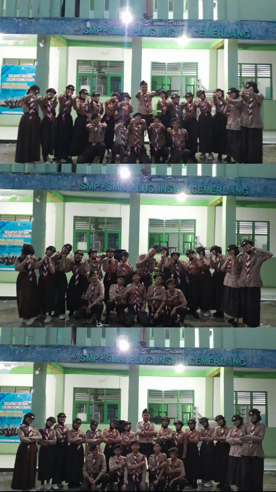
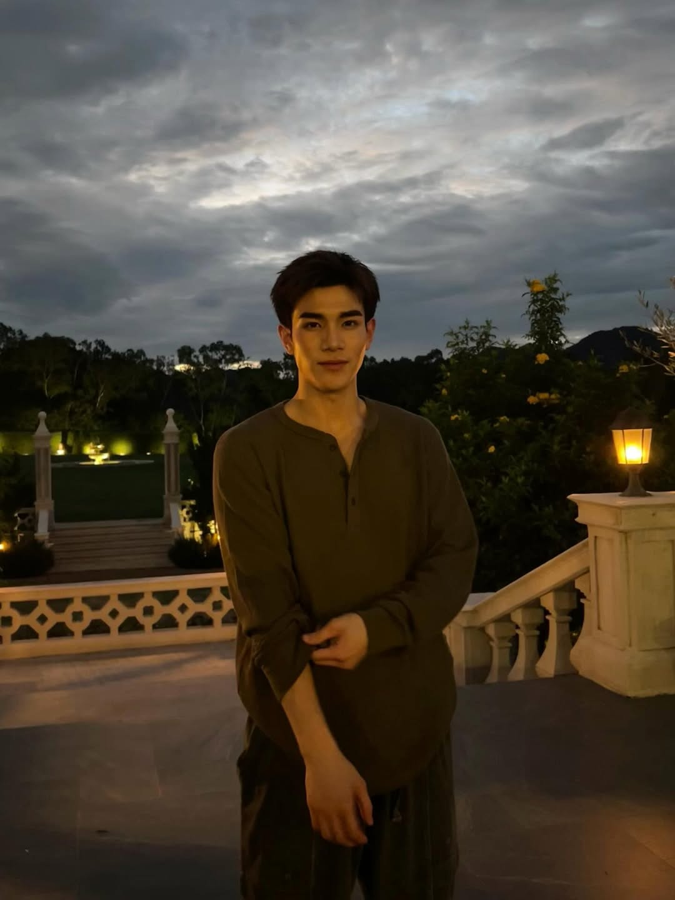

motivasi
klik untuk melihat detail
"Kesuksesan tak selalu tentang cepat-cepat. Konsisten jauh lebih berharga daripada terburu-buru".
foto pramuka
klik untuk melihat detail

disiplin, keberanian, kemandirian, cinta tanah air, gotong royong, dan cinta alamfoto gemini
klik untuk melihat detail
Gemini Norawit, yang memiliki nama lengkap Norawit Titicharoenrak, adalah aktor dan penyanyi asal Thailand yang lahir pada 13 Juni 2004 di Bangkok.
foto fourth
klik untuk melihat detail

Fourth Nattawat Jirochtikul adalah aktor dan penyanyi Thailand yang lahir pada 18 Oktober 2004, lebih dikenal dengan nama Fourthfoto byeoon wo
klik untuk melihat detail
Byeon Woo Seok adalah aktor dan model Korea Selatan kelahiran 31 Oktober 1991 yang dikenal lewat drama seperti Lovely Runner (2024), Record of Youth (2020), dan film 20th Century Girl (2022).
biodata ayu
klik untuk melihat detail